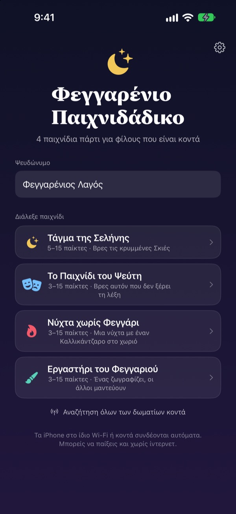
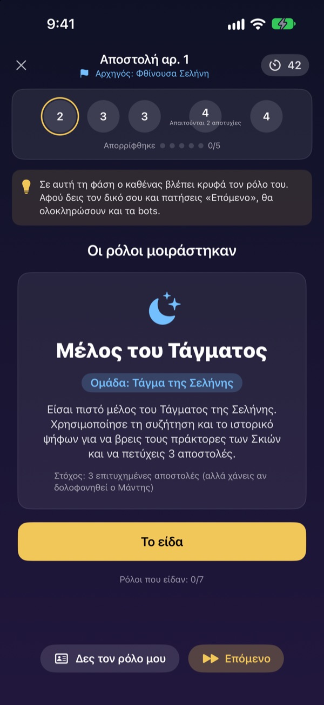
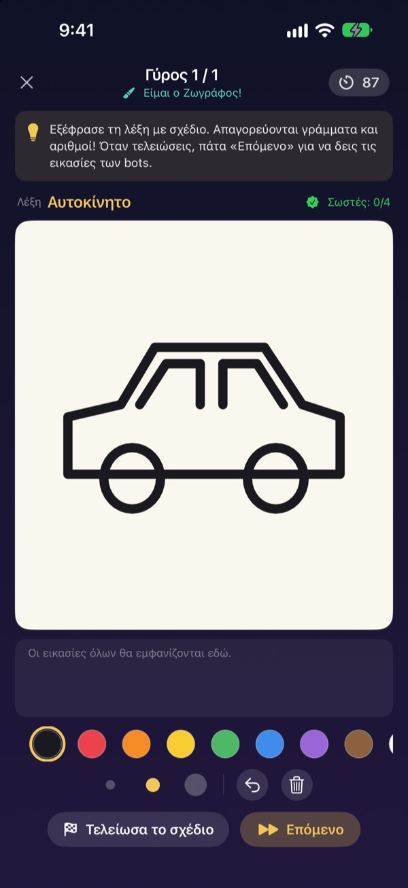
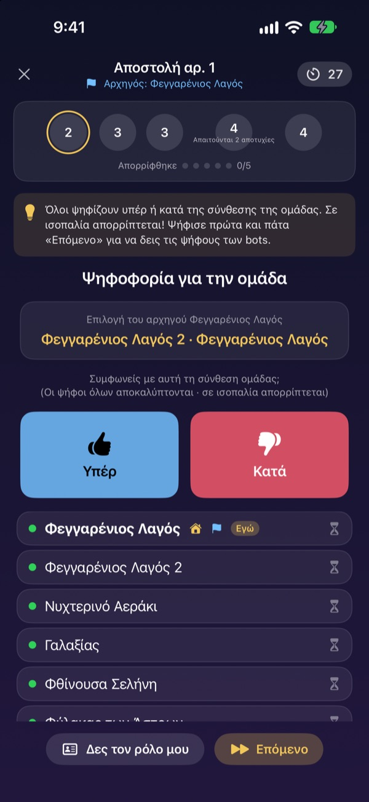

Ήρθαν όλοι;
Βγάλτε τα iPhone.
Ένας φτιάχνει δωμάτιο και όσοι είναι κοντά μπαίνουν σε δευτερόλεπτα. Ρόλοι και μυστικές λέξεις εμφανίζονται μόνο στην οθόνη του καθενός: χωρίς κάρτες και χωρίς κάποιον που κάθεται απ’ έξω για να συντονίζει.
Όλα τα παιχνίδια δωρεάν. Χωρίς λογαριασμό και internet.

Παίξε έναν γύρο Ψεύτη
Φαντάσου πέντε iPhone στο τραπέζι και πάτα τα ένα ένα για να κρυφοκοιτάξεις. Μόνο ένας δεν ξέρει τη λέξη. Μπορείτε και να δίνετε την οθόνη ο ένας στον άλλον.
Μαζευτήκατε, αλλά δεν ξέρετε τι να παίξετε
Βραδιά παιχνιδιών, Σαββατοκύριακο στο εξοχικό, γιορτές με την οικογένεια. Για ένα παιχνίδι κρυφών ρόλων κάποιος πρέπει να μείνει απ’ έξω και να συντονίζει, και τα διπλωμένα χαρτάκια ποτέ δεν μένουν πραγματικά κρυφά. Σε σπίτι με αδύναμο Wi-Fi, ούτε τα online παιχνίδια παίζουν. Στο Φεγγαρένιο Παιχνιδάδικο τον συντονισμό, το μοίρασμα ρόλων και τη σύνδεση τα αναλαμβάνουν τα iPhone.
Ο ρόλος σου μένει στη δική σου οθόνη
Μόλις ξεκινήσει το παιχνίδι, κάθε iPhone παίρνει τον δικό του ρόλο ή τη δική του λέξη. Ούτε κάρτες, ούτε «όλοι κλείνουν τα μάτια».
Στην ψηφοφορία φαίνεται μόνο ποιος έχει ψηφίσει. Ποιος ψήφισε ποιον μένει μυστικό μέχρι την αποκάλυψη.

Τέσσερα παιχνίδια για κάθε παρέα
Στο Παιχνίδι του Ψεύτη κερδίζει η ευφράδεια, στο Τάγμα της Σελήνης κυνηγάτε τις Σκιές με αποστολές και ψηφοφορίες, στη Νύχτα χωρίς Φεγγάρι βρίσκετε τον Καλλικάντζαρο σε μία νύχτα, και στο Εργαστήρι του Φεγγαριού ένας ζωγραφίζει και οι άλλοι μαντεύουν.
Το Τάγμα της Σελήνης από 5 παίκτες, τα υπόλοιπα από 3, όλα έως 15.

Νέο παιχνίδι; Το μαθαίνεις σε λίγα λεπτά
Κάθε παιχνίδι έχει λειτουργία «Πώς παίζεται», όπου παίζεις έναν γύρο με bots βήμα βήμα. Διάβασε την οδηγία πάνω και πάτα «Επόμενο».
Αν η εφαρμογή κλείσει ή χαθεί η σύνδεση, πάτα «Συνέχεια» στην αρχική οθόνη και γυρνάς στον ίδιο γύρο.

Ξεκίνα σε τρία βήματα
- 1
Ψευδώνυμο και παιχνίδι
Όλοι ανοίγουν την εφαρμογή, γράφουν ψευδώνυμο και διαλέγουν παιχνίδι.
- 2
Δημιουργία ή συμμετοχή σε δωμάτιο
Ένας φτιάχνει δωμάτιο, οι άλλοι το βρίσκουν από την «Αναζήτηση δωματίων κοντά».
- 3
Ο οικοδεσπότης ξεκινά
Όταν μπουν όλοι, ο οικοδεσπότης πατά «Έναρξη παιχνιδιού». Τα υπόλοιπα τα αναλαμβάνει η εφαρμογή.
Τα τέσσερα παιχνίδια
- Το Παιχνίδι του Ψεύτη · 3–15 παίκτες
- Όλοι παίρνουν την ίδια λέξη εκτός από έναν. Με τη σειρά την περιγράφουν και μετά ψηφίζουν τον Ψεύτη. Αν πιαστεί αλλά μαντέψει τη λέξη, ο Ψεύτης κερδίζει έτσι κι αλλιώς.
- Τάγμα της Σελήνης · 5–15 παίκτες
- Βρείτε τις Σκιές που κρύβονται στο Τάγμα. Ο αρχηγός διαλέγει ομάδα αποστολής, όλοι ψηφίζουν υπέρ ή κατά και η ομάδα ρίχνει κρυφά επιτυχία ή αποτυχία. Κερδίζει η πλευρά που θα πάρει πρώτη τρεις αποστολές.
- Νύχτα χωρίς Φεγγάρι · 3–15 παίκτες
- Μία νύχτα, κι ένας Καλλικάντζαρος κρύβεται στο χωριό. Τη νύχτα ο Σαμάνος, ο Νυχτερινός κλέφτης και ο Πλακατζής δρουν κρυφά. Τα ξημερώματα γίνεται συζήτηση και υπάρχει μόνο μία ψηφοφορία για να βρεθεί ο Καλλικάντζαρος.
- Εργαστήρι του Φεγγαριού · 3–15 παίκτες
- Ένας ζωγραφίζει τη λέξη και οι άλλοι μαντεύουν στη συνομιλία. Όσο πιο γρήγορα τη βρεις, τόσο περισσότεροι πόντοι, και ο ζωγράφος παίρνει πόντους για κάθε σωστή απάντηση.
Κάθε παιχνίδι μπορείς να το δοκιμάσεις πρώτα μόνος με bots στη λειτουργία «Πώς παίζεται».
Συχνές ερωτήσεις
Δεν βλέπω το δωμάτιο.
Έλεγξε ότι ο οικοδεσπότης και οι παίκτες είναι στο ίδιο Wi-Fi ή κοντά ο ένας στον άλλον. Το Φεγγαρένιο Παιχνιδάδικο πρέπει να είναι ενεργό στις Ρυθμίσεις ▸ Απόρρητο και ασφάλεια ▸ Τοπικό δίκτυο για να βρίσκει κοντινές συσκευές. Με ανοιχτά και το Wi-Fi και το Bluetooth η σύνδεση είναι πιο σταθερή.
Πρέπει να επιτρέψω την πρόσβαση στο τοπικό δίκτυο;
Ναι, έτσι η εφαρμογή βρίσκει κοντινά iPhone και συνδέεται μαζί τους. Αν πάτησες «Να μην επιτρέπεται», ενεργοποίησέ το ξανά στις Ρυθμίσεις ▸ Απόρρητο και ασφάλεια ▸ Τοπικό δίκτυο.
Χάθηκε η σύνδεση στη μέση του παιχνιδιού.
Άνοιξε ξανά την εφαρμογή και πάτα «Συνέχεια» στην αρχική οθόνη για να γυρίσεις στο ίδιο δωμάτιο και στον ίδιο γύρο. Ο ρόλος και οι πόντοι σου μένουν. Αν αργεί να συνδεθεί, μπες ξανά από τη λίστα δωματίων.
Κάποιος δεν απαντά και το παιχνίδι κόλλησε.
Ο οικοδεσπότης μπορεί να αφαιρέσει όποιον δεν απαντά οποιαδήποτε στιγμή, και το παιχνίδι ξαναμετρά με όσους έμειναν και συνεχίζει. Η λειτουργία οικοδεσπότη GM μπορεί επίσης να προσπεράσει ένα κολλημένο βήμα.
Πόσοι παίκτες χρειάζονται;
Το Τάγμα της Σελήνης θέλει 5. Ο Ψεύτης, η Νύχτα χωρίς Φεγγάρι και το Εργαστήρι του Φεγγαριού ξεκινούν από 3. Όλα φτάνουν έως 15. Λίγοι; Μάθετε τους κανόνες με bots στη λειτουργία «Πώς παίζεται».
Χρειάζεται internet ή λογαριασμός;
Όχι. Χωρίς εγγραφή, χωρίς σύνδεση, χωρίς internet. Τα κοντινά iPhone συνδέονται απευθείας και τα δεδομένα του παιχνιδιού δεν στέλνονται ποτέ σε διακομιστή.
Μπορώ να δοκιμάσω πρώτα μόνος μου;
Ναι. Διάλεξε παιχνίδι και μετά «Πώς παίζεται (εξάσκηση με bots)». Τα bots μπαίνουν στο δωμάτιο και παίζεις έναν ολόκληρο γύρο βήμα βήμα.
Πώς αναφέρω ένα σφάλμα ή στέλνω μια ιδέα;
Κατευθείαν από την εφαρμογή, στις Ρυθμίσεις (γρανάζι) ▸ Υποστήριξη, ή με email στη διεύθυνση παρακάτω. Θα απαντήσουμε το συντομότερο.
Σφάλματα, ιδέες ή οτιδήποτε άλλο: γράψε στο mizzking75@gmail.com.